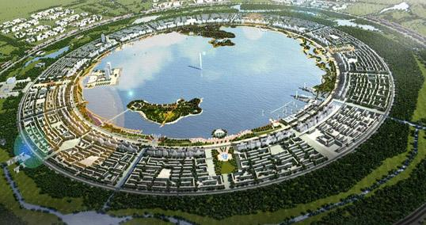
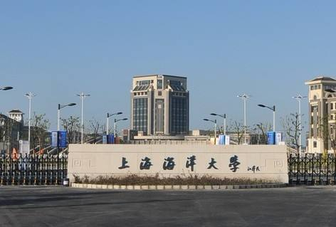
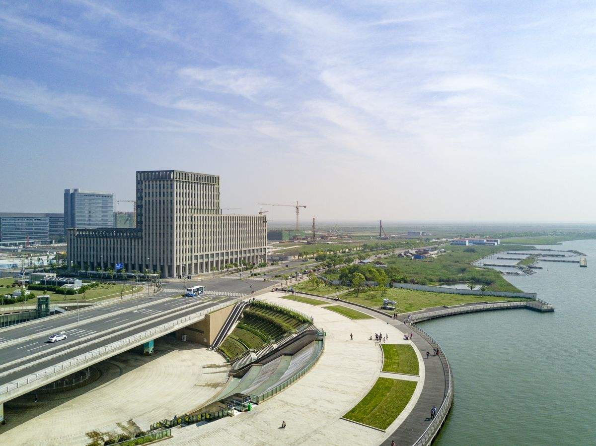

Lingang area is in the southeast corner of Shanghai, which is located in the Yangtze River estuary and Hangzhou Bay Interchange, 75 km from the center of Shanghai, north of Pudong International Airport, south of Yangshan International Hub Port, with 13 km long coastline, with unique wharf Resources, is the Shanghai coastal hub of the important nodes of the city and China (Shanghai) free trade pilot area construction of the direct hinterland.
Tourism & Development
Lingang has a good natural landscape with tourist value. China Maritime Museum, Shanghai Planetarium and Dishui Lake are the most famous attractions in Lingang.
China Maritime Museum with the total area of 25,000 square meters, construction area of 46,000 square meters, the exhibition area of 21,000 square meters. It is known as a national maritime museum.
Dishui Lake is currently the largest artificial lake excavated on the beach in China, and the area is equivalent to Hangzhou West Lake.
Shanghai Astronomical Observatory started to be built in 2016. It uses a variety of high-tech display technology to create high-precision simulation of the stars and immersion of the universe roaming scenes, but also through the astronomical telescope actually observed the sun and many stars.
Since the development of Lingang, Dishui Lake Crowne Plaza Hotel, Howard Johnson International Hotel and other projects to promote the development have introduced.
History of Lin Gang area
Shanghai Lin Gang is located in Pudong's southeast, about 76 kilometers away from the people's Square. In the early days, the original of Lu Chao port is a wasteland. After the development and construction in 2002, here has become the golden corner of Shanghai.
Industrial economy
Education resources
The higher education started construction in 2004, initially as a soft environment construction service platform for the Shanghai international shipping center, and a loose education park with the core of shipping industry and marine high-tech talents training.

The manufacturing base of port industrial zone is committed to build to support the sustainable development of energy and transportation industry China passenger vehicle and parts, key pieces of large vessels, power generation and transmission equipment, marine engineering equipment, civil aviation industry and other five major equipment industry base and supporting the development of equipment manufacturing industry of engineering machinery, logistics machinery, precision machine tools.
Since the development of Lin Gang, this area has introduced Chinese Maritime Museum, Shanghai planetarium, Dishui Lake Crown Plaza Hotel, Howard Johnson International Hotel, shopping and a number of functional projects. The government constructs 800 thousand square meters commercial office buildings and 1 million 300 thousand square meters commercial housing. And now Shanghai No.6 People's Hospital, Eastern Hospital and other social undertakings projects have settled. A number of primary and secondary schools, kindergartens, farms, supermarkets, banks, hotels and other facilities put into use.